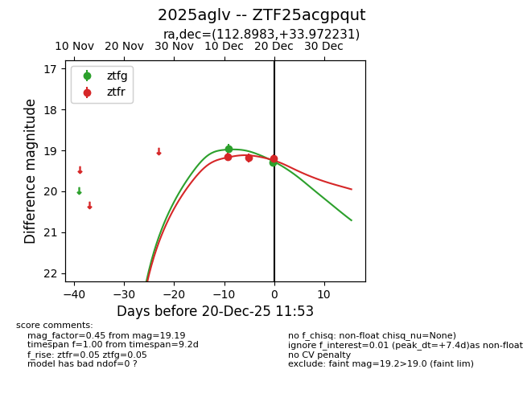
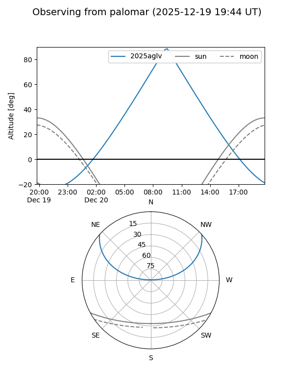
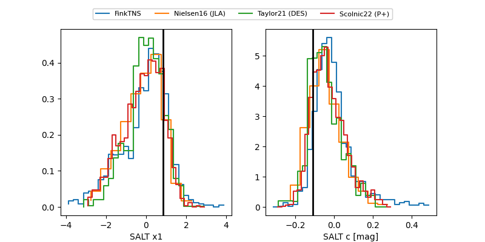

2025aglv
Target 2025aglv at 2025-12-20 07:04
Aliases and brokers:
FINK: fink-portal.org/ZTF25acgpqut
Lasair: lasair-ztf.lsst.ac.uk/objects/ZTF25acgpqut
ALeRCE: alerce.online/object/ZTF25acgpqut
TNS: wis-tns.org/object/2025aglv
YSE: ziggy.ucolick.org/yse/transient_detail/2025aglv
alt names
ZTF25acgpqut (ztf,fink_ztf)
2025aglv (tns,yse)
Coordinates:
equatorial (ra, dec) = 112.8983,+33.97223
equatorial (HMS+DMS) = 07:31:35.58,+33:58:20.03
galactic (l, b) = (185.0853,+22.54798)
Flags:
Photometry:
last ztfg=19.29, ztfr=19.18
2 ztfg, 2 ztfr detections
Lightcurve

Visibility


Additional plots
